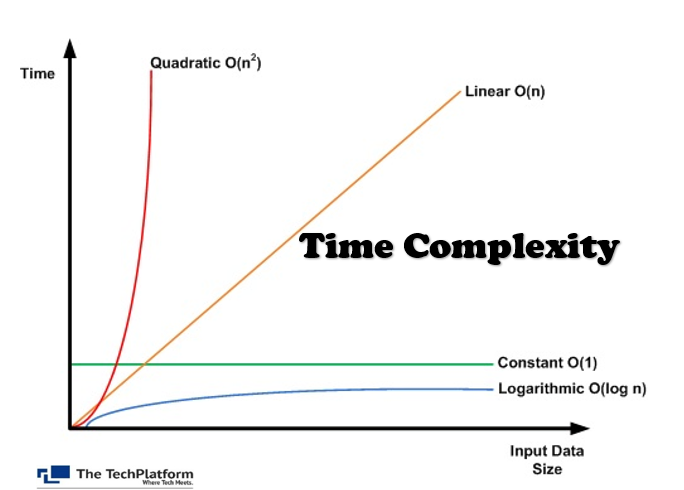

What Is Time Complexity?
So we have done quite a few challenges. I want to talk a little bit about concepts such as time complexity, runtime, space complexity and Big O notation. This is stuff that you may be asked about in a technical interview, so it's important to at least have a basic understanding of it.
Don't get overwhelmed. If you don't understand some of this stuff right away, that's okay. It's a lot to take in.
There are several different types of time complexity. I am going to go over the most common ones in this course.
Runtime vs Time Complexity
When we talk about runtime, runtime pertains to how long it takes for a function to run. We can measure this in seconds, milliseconds, or any other unit of time.
When we talk about time complexity, we're talking about how the runtime scales as the input grows. So when we analyze the time complexity of a function, we're essentially trying to understand how the function's runtime will change and increase as the input size increases. This provides us with insight into how efficient the function or algorithm is. So if we pass in 1 number as the input, whats the increase in runtime if we pass in 100 or 1,000 or 1,000,000 numbers. That's what time complexity is.
We measure in time complexity, which is more abstract over straight runtime because runtime can vary based on many factors like hardware, system load, how the function was written, etc.
Time complexity is often expressed in terms of "Big O" notation, which describes the upper bound of the number of basic operations performed by the algorithm relative to the size of the input. The "O" in "Big O" stands for "Order of". We'll talk more about Big O notation in the next lesson.
As I said, there are several types of time complexity, but we are going to focus on 4 of the most common ones:
- Constant Time
- Linear Time
- Quadratic Time
- Logarithmic Time
Let's look at a chart to help us visualize these different types of time complexity.

We are going to go through most of these by example, but for now, I'll give you a quick explanation of each one.
Constant Time Complexity
Constant time is when the runtime is always the same, no matter how big the input is. So if the input, meaning the function parameter is 1 number or 1 million numbers, the runtime will always be around the same.
If we look at the chart, we can see that the constant line is flat. So the runtime is constant. It doesn't matter how big the input is. The runtime will always be around the same. This is the most efficient type of time complexity, however achieving constant time complexity is not usually possible due to the nature of computation and is typically associated with simple operations or data structures that can be accessed directly in a single step.
Linear Time Complexity
Linear time is when the runtime scales linearly as the input grows. So if the input is 1 number, the runtime will be 1 step. If the input is 1 million numbers, the runtime will be 1 million steps. That's why the orange line is a straight line in the chart. As the input grows, the runtime grows at the same rate.
I would say linear is the most common type of complexity that you'll see. It accounts for about 95% or more of the challeneges that we've done in this course. As far as efficiency, it is fairly efficient as it's a one to one growth. It's more efficient than quadratic time complexity, which we'll talk about next.
Quadratic Time Complexity
Quadratic time is when the runtime scales quadratically as the input grows. “Quadratic” is the fancy adjective used to describe squaring, or raising to the power of 2. So if the input size is 1, the runtime is 1 step. If the input size is 10, the runtime is 100 steps. If the input size is 100, the runtime is 10,000 steps. And so on.
If we look at the chart, we can see that the quadratic line is a curve. So the runtime is growing at a much faster rate compared to linear growth. This is not very efficient. We want to avoid quadratic time complexity if possible.
Logarithmic Time Complexity
Logarithmic time is when the runtime scales logarithmically as the input grows. So as the input size increases, the time taken by the algorithm increases, but at a much slower rate compared to linear or quadratic growth.
Mathematically, a logarithm is the inverse function or the opposite of an exponent. So if we have 2 to the power of 3, the logarithm is 3. If we have 2 to the power of 4, the logarithm is 4. If we have 2 to the power of 5, the logarithm is 5. And so on.
If we look at the chart, we can see that the logarithmic line is almost flat. It does increase but at a much slower rate. So any function or algorithm that uses logarithmic time is very efficient.
In the next lesson, I want to talk about Big O notation and how we can use it to describe the time complexity of a function.